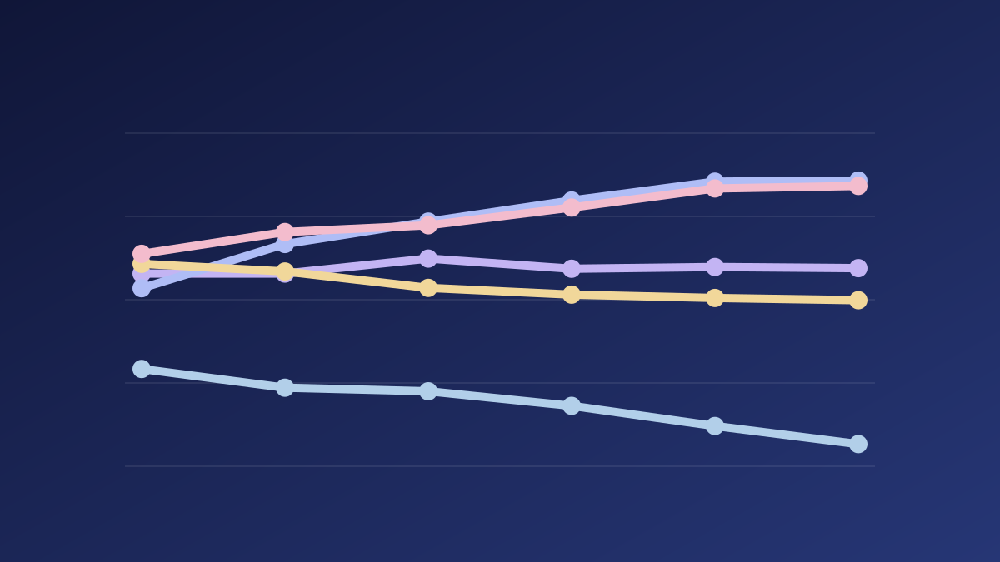
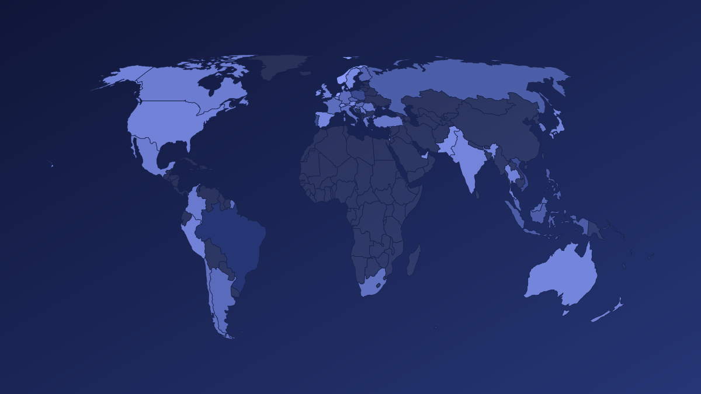
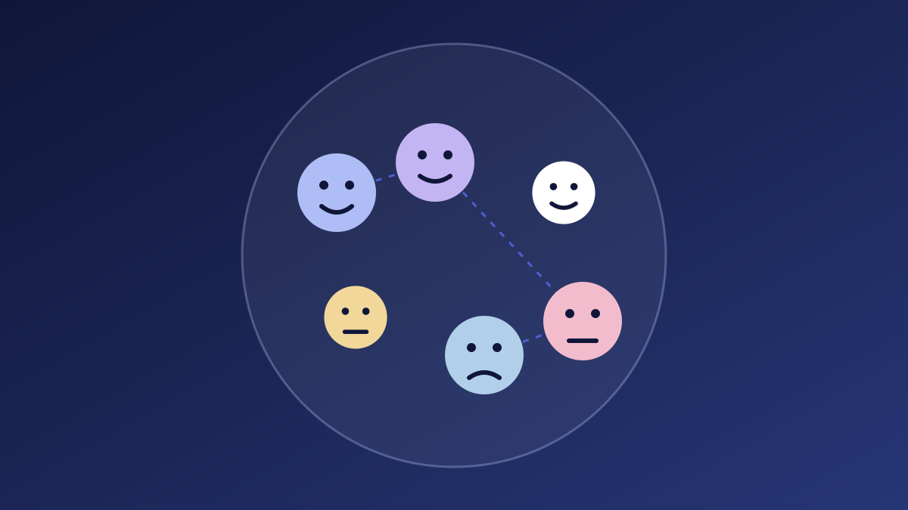
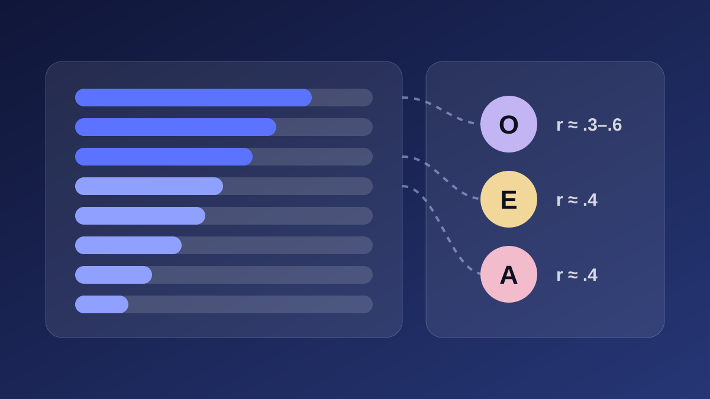
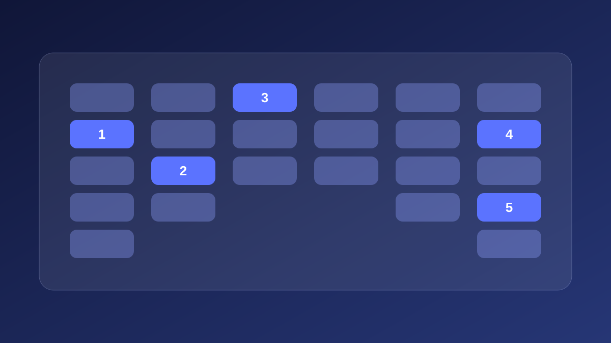

Ingest & Parse AST
Parse repository source code as passive text into syntax trees without executing untrusted code.
Ingest entire codebases with polyglot Tree-sitter AST parsing, sub-15ms hybrid BM25+FAISS vector search, trained GBDT re-rankers, and grounded local LLM explanations. 100% offline. Zero cloud API calls. Zero code telemetry.
Compare BM25 lexical speed, FAISS dense semantic matching, and trained GBDT ranking side-by-side. See recall, MRR, and NDCG metrics on unseen holdout test repositories.
Parse AST syntax trees across Python, JS, TS, Java, C++, and C into structural chunks.
Construct 384-dimensional dense vectors and BM25+ subword indices with zero cloud leakage.
Local Qwen Coder generates step-by-step logic walkthroughs with exact line-level references.
3 verified code citations
BM25 captures exact identifiers in 0.09ms; trained GBDT re-ranking incorporates call graphs and cyclomatic complexity.
CodeLens ships with two production GBDT models: a 13-feature Learning-to-Rank engine and an 11-feature Cyclomatic Maintainability Risk Classifier (LOW, MEDIUM, HIGH). Train directly on your repository with zero data leakage.
CodeLens combines five independent analysis engines. From polyglot AST syntax trees to grounded local LLMs, every engine provides verifiable evidence with zero cloud telemetry.
Launch CodeLens AITree-sitter extraction of functions, classes, imports, and call trees across 6 languages.
384-dimensional dense semantic vectors optimized for code and technical text using all-MiniLM-L6-v2.
Probabilistic subword keyword retrieval addressing camelCase and snake_case tokens in 0.09ms.
13-feature learning-to-rank GBDT model and 11-feature cyclomatic maintainability risk classifier.
CodeLens runs completely on your local machine. No account, no API key, and your code never leaves your drive.
Launch CodeLens AIParse repository source code as passive text into syntax trees without executing untrusted code.
Fuse BM25 subword lexical scores with FAISS dense cosine similarity using a trained 13-feature ML model.
Pass filtered evidence packs to local Qwen Coder with strict confidence hallucination guards.
Direct callers, downstream dependencies, and maintainability risk mapped with verified line citations.
Start with high-level architectural overview, then inspect exact call graphs, blast radius impacts, and cyclomatic complexity metrics.
CodeLens passive analysis parses source code purely as static data syntax trees, never executing untrusted repository code.
Deep dives into hybrid retrieval, polyglot AST parsing, and ML-assisted code analysis.
View Repository Docs
How combining dense semantic vectors with lexical subword indexing achieves 84.5% Recall@10 on unseen holdout code repositories.

Extracting functions, classes, and scopes across Python, JavaScript, TypeScript, Java, C++, and C with multi-chunk structural boundaries.

How strict evidence packs and calibrated confidence gates prevent AI hallucinations when explaining unfamiliar codebases.
Using 11 complexity features—McCabe cyclomatic metrics, nesting depth, and parameter counts—to classify maintainability risk.

Designing local index stores with FAISS IndexFlatIP and RankBM25 Plus for air-gapped security and compliance.

Tracing caller/callee execution flow and import graphs to predict downstream blast radiuses before refactoring.
CodeLens is open-source under the MIT license with 58 automated unit, integration, and prompt-injection tests. Evaluate on unseen holdout codebases with full reproducibility.
From semantic hybrid search to blast-radius dependency graphs and custom ML model training. All 100% local.
Open CodeLens AIUnified chat reasoning engine with a built-in Search-Only toggle. Sub-15ms BM25 + FAISS hybrid retrieval paired with grounded local LLM citations.
Two-tab health audit uniting McCabe Cyclomatic Complexity hotspots, code smell detections, and non-destructive static AST security scanning.
Unified architecture studio toggling between inferred structural subsystem layers and interactive NetworkX dependency graphs with in/out degrees.
Syntax-highlighted repository tree with AST symbol outline and 1-click caller/callee execution flow tracing directly inside the file viewer.
Trace downstream impact and identify broken callers across the dependency graph before refactoring or removing functions.
Compare architectures, structural complexity, and dependency footprints across multiple projects side-by-side.
In-app GitHub repository cloning with 1-click popular presets (click, fastapi, react), background AST parsing, and vector indexing.
Generate exportable markdown and structured reports covering architecture patterns, quality indices, and security findings.
Zero cloud telemetry. Sub-15ms hybrid search. Polyglot AST call trees. Ingest your repositories locally with full peace of mind.